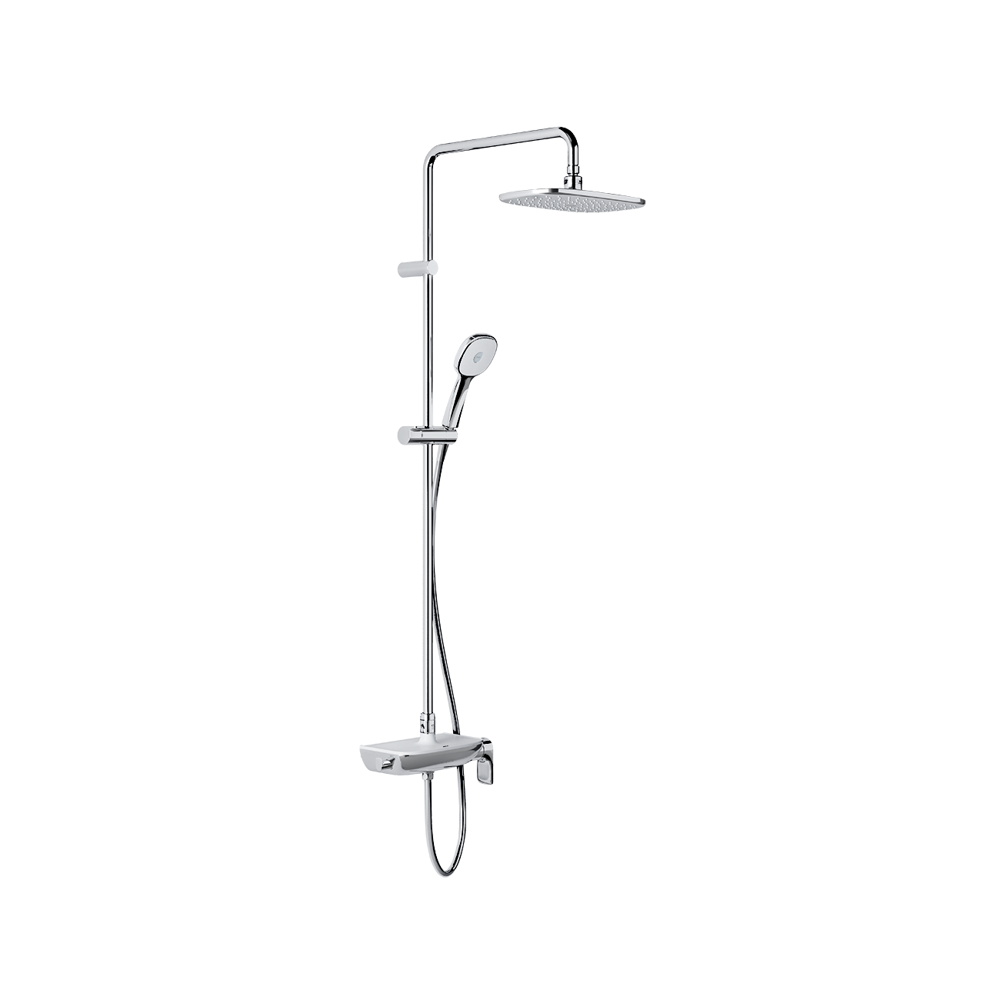
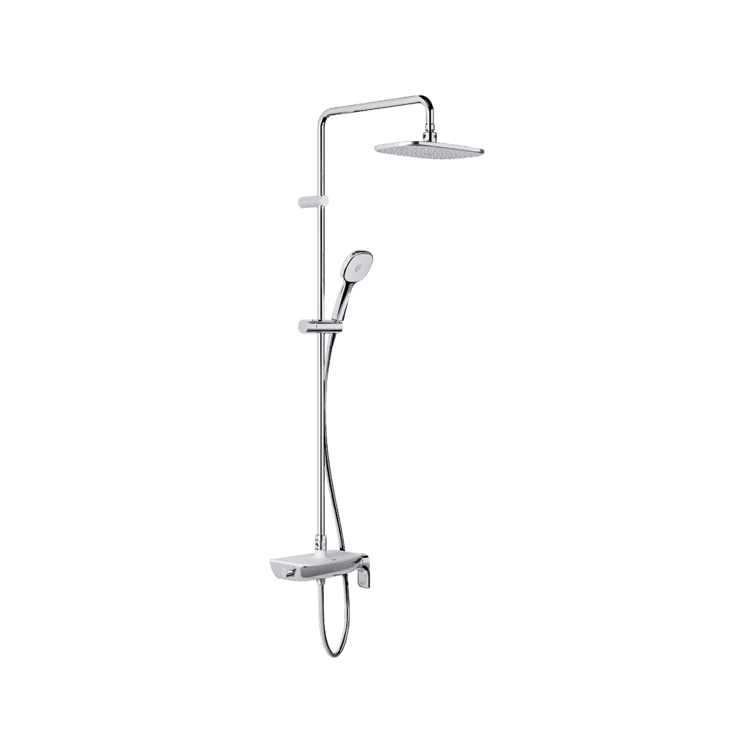
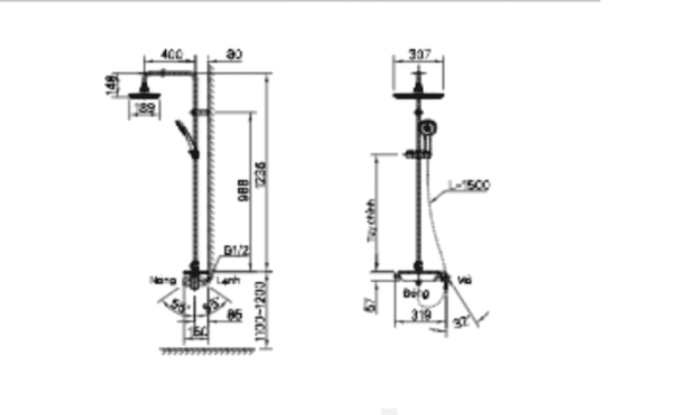

Sen tắm cây INAX BFV-615S-8C là lựa chọn lý tưởng cho không gian phòng tắm hiện đại. Sản phẩm sở hữu thiết kế sang trọng với bát sen lớn bao trọn cơ thể, mang lại cảm giác thư giãn thoải mái. Thân vòi phủ trắng sứ tinh tế, vừa tạo điểm nhấn đẳng cấp vừa có thể tận dụng làm khay để đồ tiện lợi. Sản phẩm được trang bị tay sen tăng áp Aqua POWER cùng bộ chuyển đổi chức năng trực quan, đáp ứng nhu cầu sử dụng linh hoạt và hiệu quả ngay cả trong điều kiện áp lực nước thấp.Thiết kế của sen tắm cây BFV-615S-8CKiểu dáng sang trọng với thiết kế hình khối tinh tế, phù hợp với không gian phòng tắm phong cách hiện đại.Bát sen lớn bao trọn cơ thể, mang lại trải nghiệm tắm thư giãn, dòng nước mềm mại và đều khắp cơ thể.Thân vòi đa năng, màu trắng sứ, vừa tạo điểm nhấn tinh tế, vừa có thể dùng làm khay đựng dầu gội, sữa tắm tiện lợi.Màu sắc tinh tế, dễ kết hợp với các thiết bị vệ sinh cao cấp khác của INAX, tạo sự đồng bộ cho phòng tắm.Tính năng nổi bật của sen tắm cây BFV-615S-8CGiá đỡ tay sen linh hoạt: Dễ dàng di chuyển theo nhu cầu sử dụng, thuận tiện cho mọi thành viên trong gia đình.Dòng nước êm ái, ổn định: Vòi sen tạo dòng chảy mềm mại, đều khắp cơ thể, giúp tắm thư giãn và tiết kiệm nước.Bộ chuyển đổi chức năng trực quan: Người dùng có thể thay đổi chế độ tắm nhanh chóng và dễ dàng.Tích hợp tiện ích thông minh: Bề mặt thân vòi có thể dùng làm khay đựng dầu gội, sữa tắm, tối ưu hóa không gian sử dụng.Tay sen AQUA Power với tia phun nước mạnh mẽ: Công nghệ cho áp lực nước mạnh lên tới 5 lần so với tay sen thông thường. Ngoài ra, nhiệt độ tia nước được giữ ổn định, mang đến trải nghiệm tắm hoàn hảo.Để tạo nên không gian phòng tắm hiện đại, sang trọng và tiện nghi, bạn có thể kết hợp sen tắm cây BFV-615S-8C với chậu rửa treo tường AL-312V(EC/FC). Sự đồng bộ về tông màu trắng tinh tế và thiết kế hình khối hiện đại của cả hai sản phẩm sẽ mang đến tổng thể hài hòa, thanh lịch. Ngoài ra, bộ đôi này còn giúp tối ưu công năng, đảm bảo tiện lợi cho sinh hoạt hàng ngày.Bản vẽ sen tắm cây BFV-615S-8CVideo giới thiệu bộ sưu tập S200Thông số kỹ thuậtKiểu dángSen tắm đứngKích thước150 x 318 x 1336 mmTính năng- Bát sen lớn bao trọn cơ thể, tạo cảm giác thư giãn - Giá đỡ tay sen có thể di chuyển linh hoạt - Vòi sen tạo dòng chảy mềm mại, ổn định - Bộ chuyển đổi chức năng trực quan, dễ sử dụngThương hiệuINAXThiết kế- Kiểu dáng hình khối sang trọng, hiện đại - Bát sen lớn trên đầu bao trọn cơ thể, mang lại cảm giác thư giãn thoải mái - Bề mặt thân vòi lớn với màu trắng sứ INAX tạo sự tinh tế, đồng thời có thể tận dụng làm khay đựng dầu gội, sữa tắm - Giá đỡ tay sen có thể di chuyển linh hoạt, tiện lợi cho nhiều nhu cầu sử dụngCông nghệ- Tay sen với bộ tăng áp AQUA POWER, sử dụng hiệu quả ngay cả trong điều kiện áp lực nước thấpMàu sắcTrắng
Sen cây BFV-615S-8C
Vòi chậu thương hiệu INAX.
Đã cập nhật danh sách yêu thích.
DANH MỤC: Vòi chậu
MÃ SẢN PHẨM: BFV-615S-8C
DEPTH: mm
HEIGHT: mm
WIDTH: mm
Sen tắm cây INAX BFV-615S-8C là lựa chọn lý tưởng cho không gian phòng tắm hiện đại. Sản phẩm sở hữu thiết kế sang trọng với bát sen lớn bao trọn cơ thể, mang lại cảm giác thư giãn thoải mái. Thân vòi phủ trắng sứ tinh tế, vừa tạo điểm nhấn đẳng cấp vừa có thể tận dụng làm khay để đồ tiện lợi. Sản phẩm được trang bị tay sen tăng áp Aqua POWER cùng bộ chuyển đổi chức năng trực quan, đáp ứng nhu cầu sử dụng linh hoạt và hiệu quả ngay cả trong điều kiện áp lực nước thấp.Thiết kế của sen tắm cây BFV-615S-8CKiểu dáng sang trọng với thiết kế hình khối tinh tế, phù hợp với không gian phòng tắm phong cách hiện đại.Bát sen lớn bao trọn cơ thể, mang lại trải nghiệm tắm thư giãn, dòng nước mềm mại và đều khắp cơ thể.Thân vòi đa năng, màu trắng sứ, vừa tạo điểm nhấn tinh tế, vừa có thể dùng làm khay đựng dầu gội, sữa tắm tiện lợi.Màu sắc tinh tế, dễ kết hợp với các thiết bị vệ sinh cao cấp khác của INAX, tạo sự đồng bộ cho phòng tắm.Tính năng nổi bật của sen tắm cây BFV-615S-8CGiá đỡ tay sen linh hoạt: Dễ dàng di chuyển theo nhu cầu sử dụng, thuận tiện cho mọi thành viên trong gia đình.Dòng nước êm ái, ổn định: Vòi sen tạo dòng chảy mềm mại, đều khắp cơ thể, giúp tắm thư giãn và tiết kiệm nước.Bộ chuyển đổi chức năng trực quan: Người dùng có thể thay đổi chế độ tắm nhanh chóng và dễ dàng.Tích hợp tiện ích thông minh: Bề mặt thân vòi có thể dùng làm khay đựng dầu gội, sữa tắm, tối ưu hóa không gian sử dụng.Tay sen AQUA Power với tia phun nước mạnh mẽ: Công nghệ cho áp lực nước mạnh lên tới 5 lần so với tay sen thông thường. Ngoài ra, nhiệt độ tia nước được giữ ổn định, mang đến trải nghiệm tắm hoàn hảo.Để tạo nên không gian phòng tắm hiện đại, sang trọng và tiện nghi, bạn có thể kết hợp sen tắm cây BFV-615S-8C với chậu rửa treo tường AL-312V(EC/FC). Sự đồng bộ về tông màu trắng tinh tế và thiết kế hình khối hiện đại của cả hai sản phẩm sẽ mang đến tổng thể hài hòa, thanh lịch. Ngoài ra, bộ đôi này còn giúp tối ưu công năng, đảm bảo tiện lợi cho sinh hoạt hàng ngày.Bản vẽ sen tắm cây BFV-615S-8CVideo giới thiệu bộ sưu tập S200Thông số kỹ thuậtKiểu dángSen tắm đứngKích thước150 x 318 x 1336 mmTính năng- Bát sen lớn bao trọn cơ thể, tạo cảm giác thư giãn - Giá đỡ tay sen có thể di chuyển linh hoạt - Vòi sen tạo dòng chảy mềm mại, ổn định - Bộ chuyển đổi chức năng trực quan, dễ sử dụngThương hiệuINAXThiết kế- Kiểu dáng hình khối sang trọng, hiện đại - Bát sen lớn trên đầu bao trọn cơ thể, mang lại cảm giác thư giãn thoải mái - Bề mặt thân vòi lớn với màu trắng sứ INAX tạo sự tinh tế, đồng thời có thể tận dụng làm khay đựng dầu gội, sữa tắm - Giá đỡ tay sen có thể di chuyển linh hoạt, tiện lợi cho nhiều nhu cầu sử dụngCông nghệ- Tay sen với bộ tăng áp AQUA POWER, sử dụng hiệu quả ngay cả trong điều kiện áp lực nước thấpMàu sắcTrắng
DANH MỤC: Vòi chậu
MÃ SẢN PHẨM: BFV-615S-8C
DEPTH: mm
HEIGHT: mm
WIDTH: mm